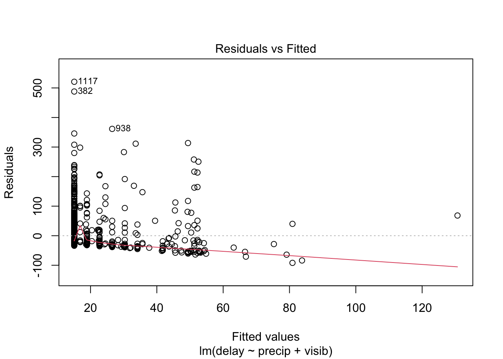
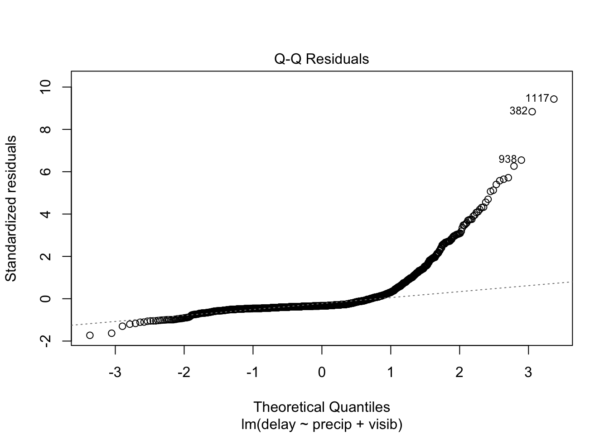
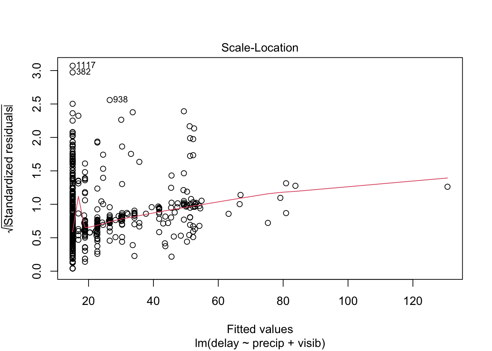
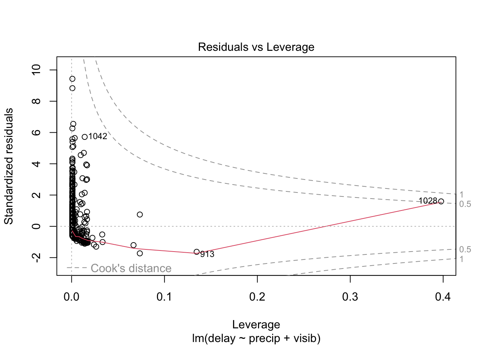
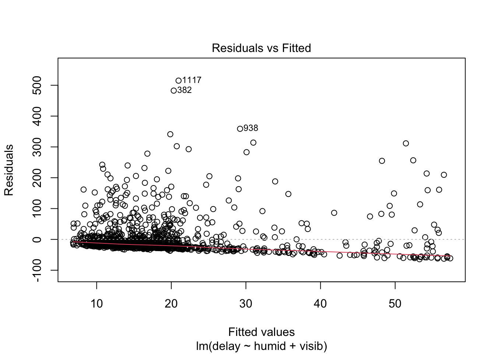
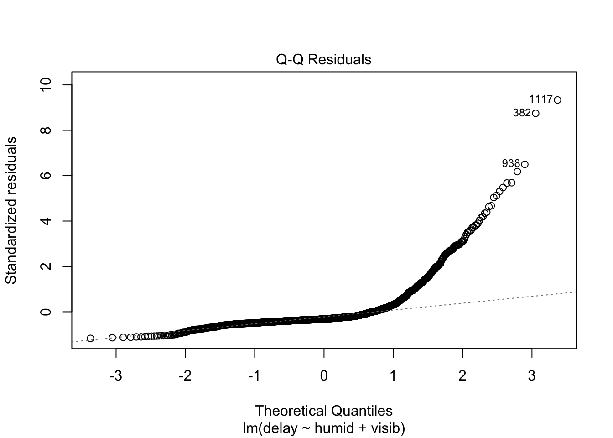
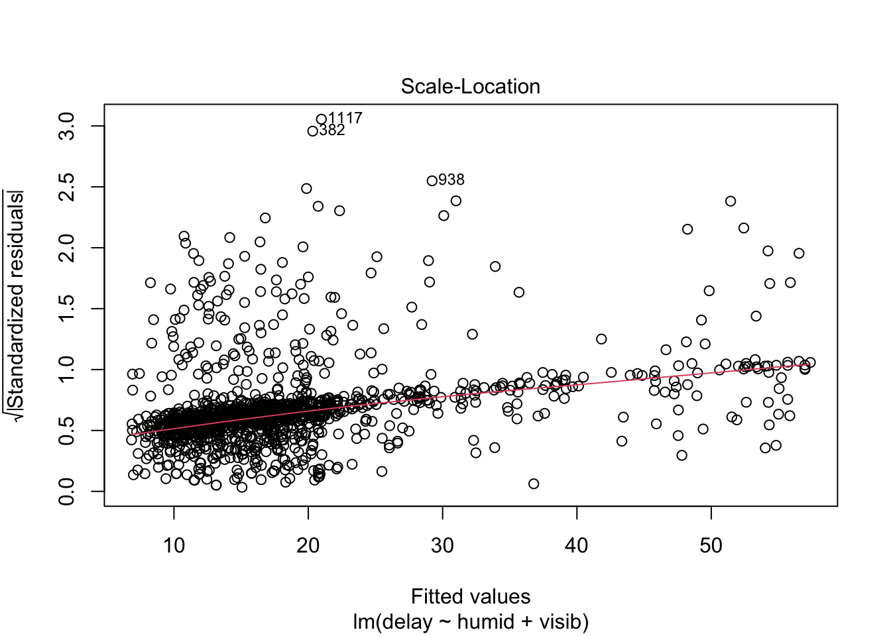
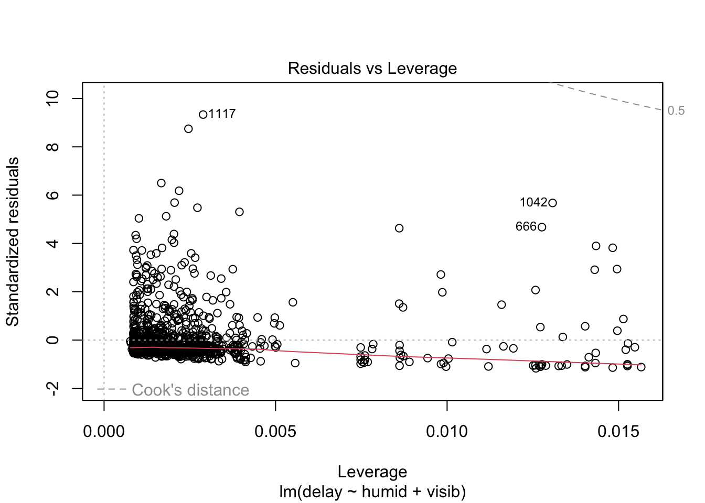

flights %>%
filter( origin == "JFK", carrier == "EV") %>%
mutate( DateTime = paste(month,day,hour, sep=".")) %>%
select( DateTime,
`Departure Delay` = dep_delay,
`Departure Time` = sched_dep_time) %>%
droplevels() -> df.jfk Regression Analysis Assignment
Abstract
Using a regression analysis and Akaike Information Criterion (AIC) to identify impacts on departure delays for ExpressJet airlines out of JFK.
Since regression analysis is such a fundamental component of inferences, I thought it would be a good idea to try to work through a few more examples to give you some more practice.
For this we will use some data on flights into and out of Newark (EWR), JFK, and La Guardia airports in NYC metropolitan area.
We also have some data related to local weather conditions.
I’m going to make a synthetic data set consisting of flights out of JFK for the ExpressJet airlines. Since the weather data is on the hour, I also make a synthetic variable Month.Day.Hour so that I can join the weather data to this one.
Now I’ll do the same with the weather data.
weather %>%
filter( origin == "JFK") %>%
mutate( DateTime = paste(month,day,hour, sep=".")) %>%
select( -origin, -year, -month, -day, -hour, -time_hour ) -> df.weather Now, I’m going to merge these two data.frame objects using the common key I made DateTime.
merge( df.jfk, df.weather, by="DateTime" ) %>%
select( -DateTime ) -> df
colnames(df)[which(names(df) == "Departure Delay")] <- "delay"Activity
What features of this data set may impact the departure delay for flights coming out of JFK on ExpressJet Airlines?
# Running an initial set of single predictor models
fit.temp <- lm(delay ~ temp, data = df)
fit.humid <- lm(delay ~ humid, data = df)
fit.dewp <- lm(delay ~ dewp, data =df)
fit.wind_speed <- lm(delay ~ wind_speed, data = df)
fit.wind_dir <- lm(delay ~ wind_dir, data = df)
fit.wind_gust <- lm(delay ~ wind_gust, data = df)
fit.precip <- lm(delay ~ precip, data = df)
fit.pressure <- lm(delay ~ pressure, data = df)
fit.visib <- lm(delay ~ visib, data = df)
df.models.1 <- data.frame(
Model = c("Delay ~ Temperature",
"Delay ~ Humidity",
"Delay ~ Dewpoint",
"Delay ~ Wind Speed",
"Delay ~ Wind Direction",
"Delay ~ Wind Gust",
"Delay ~ Precipitation",
"Delay ~ Pressure",
"Delay ~ Visibility"),
R2 = c(
summary(fit.temp)$r.squared,
summary(fit.humid)$r.squared,
summary(fit.dewp)$r.squared,
summary(fit.wind_speed)$r.squared,
summary(fit.wind_dir)$r.squared,
summary(fit.wind_gust)$r.squared,
summary(fit.precip)$r.squared,
summary(fit.pressure)$r.squared,
summary(fit.visib)$r.squared
),
P = c(
tidy(fit.temp)$p.value[2],
tidy(fit.humid)$p.value[2],
tidy(fit.dewp)$p.value[2],
tidy(fit.wind_speed)$p.value[2],
tidy(fit.wind_dir)$p.value[2],
tidy(fit.wind_gust)$p.value[2],
tidy(fit.precip)$p.value[2],
tidy(fit.pressure)$p.value[2],
tidy(fit.visib)$p.value[2]
)
)
df.models.1 %>%
arrange( -R2 ) %>%
mutate( P = format( P, scientific=TRUE, digits=3)) %>%
kable( caption = "Model parameters predicting mean departure delay using a single predictor variable",
digits = 3) %>%
kable_minimal()| Model | R2 | P |
|---|---|---|
| Delay ~ Visibility | 0.027 | 2.40e-09 |
| Delay ~ Humidity | 0.019 | 5.52e-07 |
| Delay ~ Precipitation | 0.012 | 4.76e-05 |
| Delay ~ Pressure | 0.008 | 1.80e-03 |
| Delay ~ Wind Direction | 0.006 | 4.44e-03 |
| Delay ~ Dewpoint | 0.006 | 6.43e-03 |
| Delay ~ Wind Speed | 0.005 | 1.44e-02 |
| Delay ~ Wind Gust | 0.002 | 5.46e-01 |
| Delay ~ Temperature | 0.001 | 4.11e-01 |
# Focusing on the 3 predictor variables with the highest R^2 values and adding multiple predictors
fit.humid.visib <- lm(delay ~ humid + visib, data = df)
fit.humid.precip <- lm(delay ~ humid + precip, data = df)
fit.precip.visib <- lm(delay ~ precip + visib, data = df)
aic_values <- c(
AIC(fit.humid),
AIC(fit.precip),
AIC(fit.visib),
AIC(fit.humid.visib),
AIC(fit.humid.precip),
AIC(fit.precip.visib)
)
r2_values <- c(
summary(fit.humid)$r.squared,
summary(fit.precip)$r.squared,
summary(fit.visib)$r.squared,
summary(fit.humid.visib)$r.squared,
summary(fit.humid.precip)$r.squared,
summary(fit.precip.visib)$r.squared
)
p_values <- c(
tidy(fit.humid)$p.value[2],
tidy(fit.precip)$p.value[2],
tidy(fit.visib)$p.value[2],
tidy(fit.humid.visib)$p.value[2],
tidy(fit.humid.precip)$p.value[2],
tidy(fit.precip.visib)$p.value[2]
)
df.models.2 <- data.frame(
Model = c(
"Delay ~ Humidity",
"Delay ~ Precipitation",
"Delay ~ Visibility",
"Delay ~ Humidity + Visibility",
"Delay ~ Humidity + Precipitation",
"Delay ~ Precipitation + Visibility"),
R2 = r2_values,
P = p_values,
AIC = aic_values,
DeltaAIC = aic_values - min(aic_values)
)
df.models.2 %>%
mutate( P = format( P, scientific=TRUE, digits=3)) %>%
kable( caption = "Model parameters predicting mean departure delay using multiple predictor variables",
digits = 3) %>%
kable_minimal()| Model | R2 | P | AIC | DeltaAIC |
|---|---|---|---|---|
| Delay ~ Humidity | 0.019 | 5.52e-07 | 14410.43 | 14.038 |
| Delay ~ Precipitation | 0.012 | 4.76e-05 | 14418.98 | 22.587 |
| Delay ~ Visibility | 0.027 | 2.40e-09 | 14399.86 | 3.471 |
| Delay ~ Humidity + Visibility | 0.031 | 2.00e-02 | 14396.43 | 0.041 |
| Delay ~ Humidity + Precipitation | 0.026 | 1.89e-05 | 14402.64 | 6.245 |
| Delay ~ Precipitation + Visibility | 0.031 | 1.95e-02 | 14396.39 | 0.000 |
# Checking the normality of the predictor variables from the top model - precipitation and visibility
plot(fit.precip.visib)



# Checking the normality of the predictor variables from the next top model - humidity and visibility - with a delta AIC of 0.041
plot(fit.humid.visib)



After reviewing several models with both single and multiple predictors, the model delay ~ precipitation + visibility came through as the top model (R2 = 0.031, AIC = 14396.39). The next top model, delay ~ humidity + visibility, has a delta AIC of 0.041 and an identical R2 (R2 = 0.031, AIC = 14396.43) so I chose to examine this model, as well.
Delay ~ Precipitation + Visibility
This model found a significant relationship between precipitation, visibility, and the mean delay time of ExpressJet airlines out of JFK (p = 1.21e-09). I must reject the null hypothesis. However, subsequent plotting of the model suggests the data driving this model are not very “well behaved” and thus the results of this model should be interpreted with caution.
Delay ~ Humidity + Visibility
This model found a significant relationship between humidity, visibility, and the mean delay time of ExpressJet airlines out of JFK, as well (p = 1.235e-09). I must also reject the null hypothesis in light of this model. However, again, subsequent plotting of the model suggests the data driving it are not normal and thus the results of this model too also be interpreted with caution.